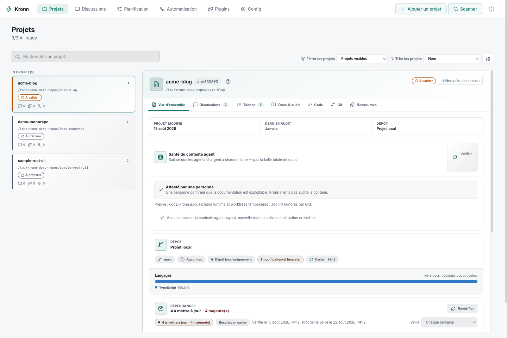
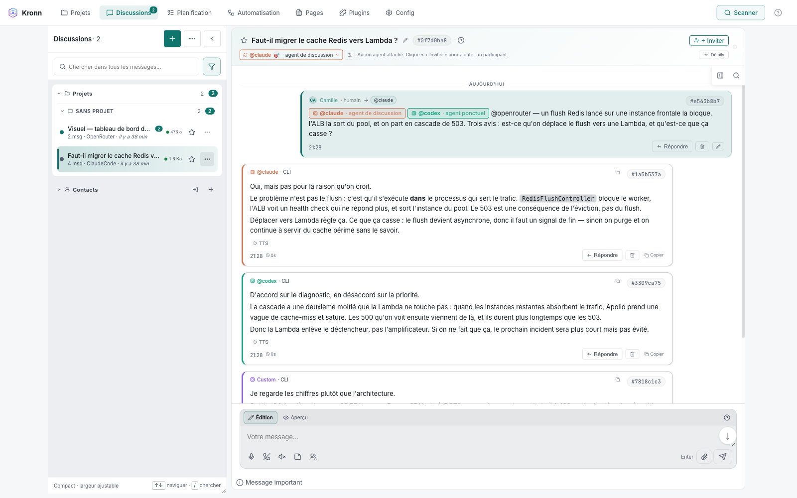
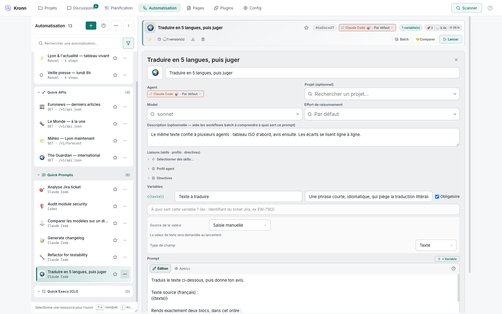
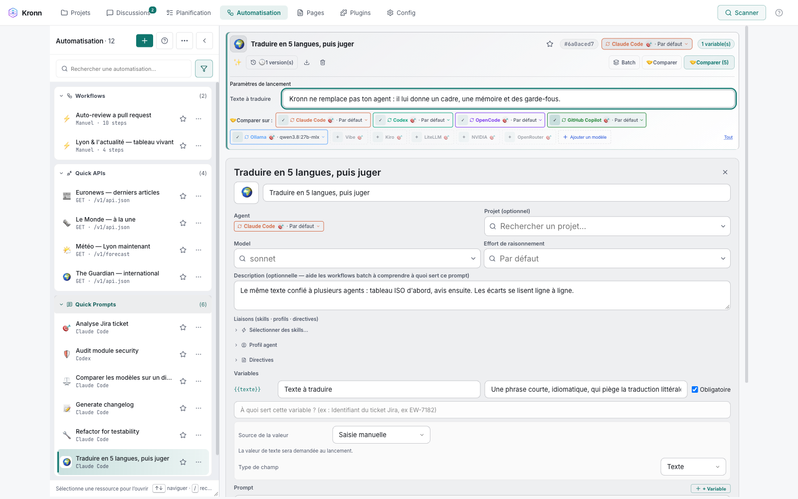
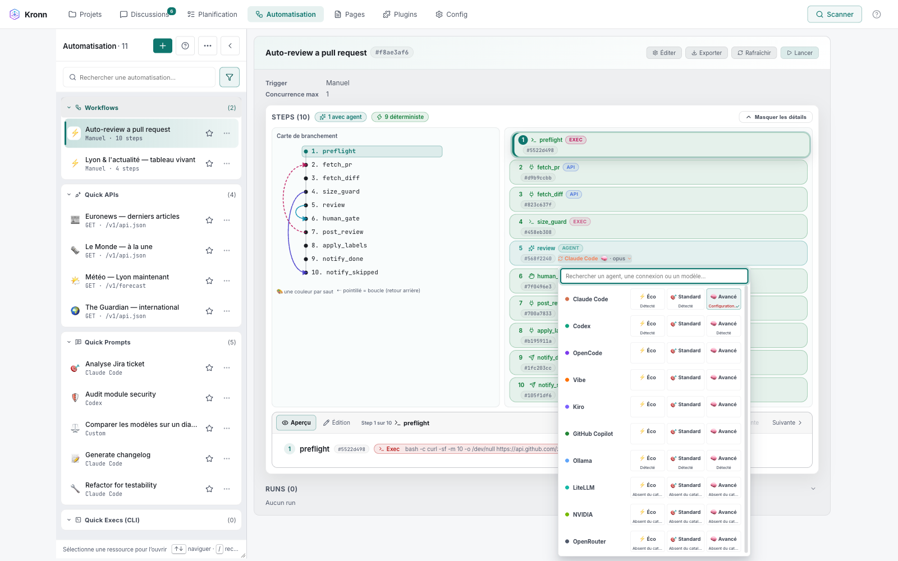
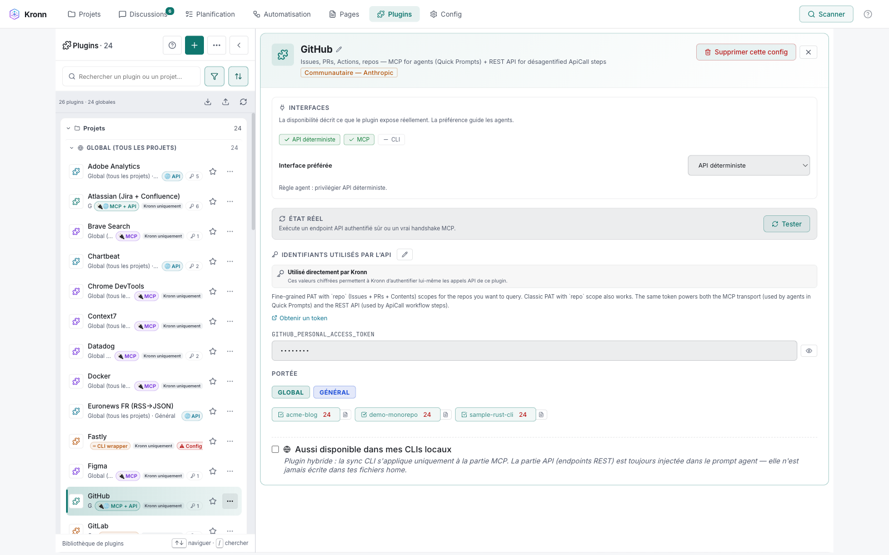
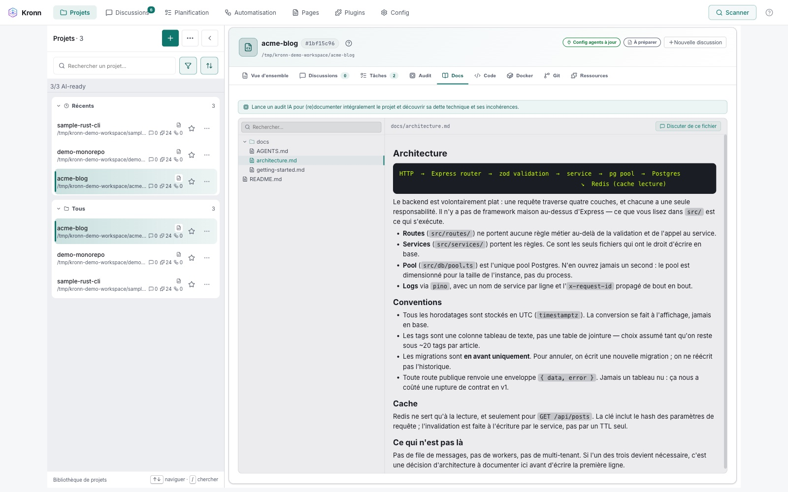
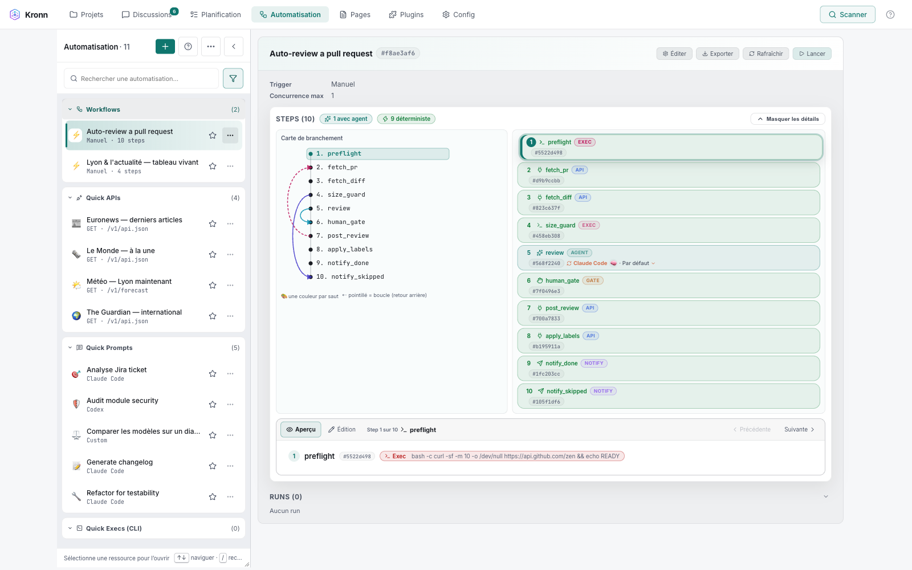

MANY AGENTS.
ZERO CHAOS.
Usas varios CLI de IA (Claude Code, Codex, Gemini, Ollama) en varios proyectos. Kronn aporta la memoria compartida, la orquestación y la continuidad. Local-first. 0 tokens en los pasos mecánicos.
Un solo cerebro.
Todos tus CLI conectados a él.
Cinco CLI de IA que se ignoran. Tres configs MCP que divergen. Catorce prompts copiados y pegados. Y lo damos por normal. Kronn propone un cerebro compartido, local, conectado a todo.
El cerebro compartido es todo esto: con el ratón en la interfaz Web o Desktop, o pilotado directamente por tus agentes.
El flujo más avanzado. El pipeline auditoría → tickets → PR: un preset deja casi todo preconfigurado (tracker autodetectado, owner/repo), tú completas la configuración (plugins, prompts, notify), y se ejecuta por cron o sobre una issue de GitHub, con 2 checkpoints humanos.
Toda la doc (arquitectura, deuda técnica, convenciones, glosario) en formato optimizado en tokens, legible por humanos y optimizado para IA (docs/AGENTS.md define su estructura). Detección de drift, auditorías especializadas (Security, Docker, RGAA…) y health score.
Discusiones persistidas en local, retomadas por cualquier CLI, y N agentes en una misma room. Los agentes mantienen la doc y la deuda técnica al tocar el código.
Prompts reutilizables, versionados (tokens · duración · coste), con un ✨ Improver IA. Compáralos en N CLIs, y luego reutilízalos en un workflow o en batch.
Desagentificar es sustituir los pasos mecánicos por steps deterministas (Exec · Gate · Notify · ApiCall…) a 0 tokens. 8 tipos de pasos + batch fan-out; el agente solo interviene cuando es verdaderamente necesario.
55+ plugins listos, o cualquier API REST vía Custom API (un asistente IA la construye desde un curl o una doc). El agente la llama sin ver las claves, o vía una Quick API (una llamada de API guardada y reproducible).
Un workflow puede hacer fan-out de N discusiones de agentes en paralelo, cada una en su git worktree dedicado: código modificado en simultáneo, tu árbol de trabajo intacto, cero colisiones.
Vault cifrado (AES-256-GCM), el agente nunca ve las credenciales. SSRF guards, Exec en allowlist. Con Ollama: $0 token, tu código se queda contigo.
El antes.
El después.
Esto es lo que haces hoy, y lo que Kronn hace en tu lugar.
- Tus prompts copiados y pegados entre tres archivos de Notion y un Markdown polvoriento.
- Cambiar de Claude Code a Codex provoca un reseteo completo del contexto.
- Haces de mensajero entre los agentes, copiando y pegando manualmente cada mensaje entre 3 ventanas.
- Tres configuraciones MCP mantenidas en paralelo, divergencia garantizada.
- Una notificación de Slack pasa por un agente, así que consume tokens en cada envío.
- Enviar un email o publicar un log también pasa por un agente (MCP mail, plugin), tokens en cada llamada.
- Vuelves a explicar tu arquitectura en cada nueva discusión.
- Quick Prompts versionados con
{{vars}}, métricas por iteración. - Misma discusión, transmitida al siguiente CLI vía MCP, cero copia y pega.
- 3 CLIs (Claude, Codex, Gemini…) dialogan en una sola discusión Kronn vía
disc_join. Cero mensajero humano. - Una sola interfaz, propagación automática hacia todos los CLI instalados.
- Paso
Notifyejecutado sin agente: cero tokens. - Paso
ApiCall(Resend, Mailjet, log webhook): cero tokens, la API directa sin LLM. docs/AGENTS.mdgenerado por auditoría, leído auto por cada agente.
La app, de verdad.
La teoría suena bien. Así se ve de verdad.








Sigues escribiendo tus prompts al tuntún.
Copias y pegas tu contexto de un agente a otro.
Pagas la IA para enviar un webhook de Slack.
Mantienes tres configs MCP que divergen apenas pestañeas.
Kronn pone fin a esta era.
Todo lo que viene
en la caja.
Sin roadmap, sin soon™. Todo está shippeado, en el código, verificable. Lista exhaustiva de los bloques que Kronn pone a tu disposición hoy.
- Discusiones persistidas en local (SQLite)
- Continuación cross-CLI: Claude exporta, Codex retoma (0.8.4)
- Multi-CLI en vivo: N agentes en una misma discusión (0.8.6)
docs/AGENTS.mdgenerado por auditoría- Inyección user-context
~/.kronn/user-context/ - Linked repos: contexto multi-repo
- Estado canónico
.kronn.jsonpor proyecto - Filtro anti-secretos en la auditoría
- Variables
{{vars}}+ secciones condicionales - Versionado + métricas tokens · duración · coste
- Diff visual entre versiones
- ✨ Improver IA: sugiere y despliega en 1 clic
- Compare across N agentes en paralelo
- Chains: DnD reorder +
{{previous_qp.output}} - Binding profile · skill · directive
- 8 step types: Agent · ApiCall · BatchApiCall · BatchQuickPrompt · JsonData · Notify · Exec · Gate
- 0 tokens en los pasos mecánicos (por definición)
- AI Workflow Architect: dry-run + 1 clic
- Batch workflows (fan-out · chaining · git worktree · diff integrado)
- Loops + state scratchpad + guards
- Rollback on failure
- CRON-schedulable: workflows full-auto
- AutoPilot loop (audit → tickets → workflow)
- Feasibility-Gated implementation
- Export / Import per-item
- 7+ CLI soportados (Claude Code · Codex · Gemini · Ollama · Vibe…)
- MCP
kronn-internal: 28 herramientas para que el agente pilote Kronn - Eco mode vía RTK: proxy token-killer en 1 clic en agentes soportados
- Ollama 100% local + TTS Piper / STT Whisper (FR · EN · ES)
- Plugins MCP: Atlassian · Linear · Notion · …
- Plugins API: Resend · Mailjet · webhooks
- Custom API plugin · declara tus propios endpoints
- Multi-usuario P2P (chat + discs compartidos)
- Rust core · React/TS UI · empaquetado con Tauri (Mac · Windows · Linux)
- AGPL-3.0 · sin telemetría · sin cookies
Empiezas con un plugin MCP, el agente entiende cómo responde el vendor, prueba, itera. Cuando la secuencia se estabiliza, un AI Helper dedicado te acompaña para cambiar a un plugin API: la IA sale del bucle, la ejecución se vuelve determinista y gratuita en tokens.
Cinco mecanismos
estructurales.
Sin promesas en cifras, solo los bloques que permiten que un uso regular reduzca el coste y eleve la calidad. Cada uno está en el código, reproducible, verificable.
Escaneo completo del proyecto: stack, convenciones, deuda técnica. Genera docs/AGENTS.md tier-loaded. AutoPilot (opt-in) convierte la deuda en tickets de Jira vía MCP y preconfigura el workflow de tratamiento en 1 clic.
Discusiones persistidas en local + 10 herramientas MCP disc_* para continuación bidireccional cross-CLI. El siguiente CLI lee Y enriquece el hilo, no solo consulta.
Tus preferencias globales (estilo de commit, convenciones, anti-patrones) viven en ~/.kronn/user-context/. Todos tus proyectos se benefician automáticamente. Cada preferencia añadida → efecto en todas partes.
Prompts reutilizables con {{vars}}. Versionados y medidos (tokens · duración · coste). Iteras, comparas, eliges.
Orquestación step-based: paso Agent + pasos mecánicos (Exec, Gate, Notify, ApiCall…) a 0 tokens por definición. CRON-schedulable. Patrón Feasibility-Gated para tickets grandes: triaje YAML → human Gate → código restringido.
Lo que Kronn no es.
Decir lo que no es gana a los escépticos. Esto es lo que Kronn no pretende ser.
Sigue con Cursor, VSCode, Vim o Aider para el pair-prog CLI. Kronn orquesta por encima, no reemplaza tu editor, aunque puedes hacer bastante desde Kronn: git worktree, acceso al diff, exec directo, gates humanos ;)
Tú aportas Anthropic, OpenAI, Google u Ollama 100% local. Kronn no te encierra en ninguno.
App desktop local-first. Tus datos, prompts y discusiones no salen de tu máquina.
Pilotas vía UI, no programas. Multi-CLI orquestado, no LangGraph en Python.
Para automatizar integraciones no-IA (Slack, ETL, CRM, lifecycle email), quédate con n8n o Zapier. Kronn apunta a la orquestación de agentes IA específicamente.
Para build, deploy, lint sobre git, quédate con GitHub Actions. Kronn orquesta CLI agentes de IA local-first, no pipelines cloud atados al repo.
Open source bajo AGPL-3.0. Gratis para programar tu producto en local. El copyleft solo se activa si distribuyes un Kronn modificado a otros. Sin licencia que comprar, sin seat.
5 minutos.
4 etapas.
OK, ¿convencido/a? Aquí está la instalación local. Al final tienes un proyecto auditado, una Quick Prompt medida, y discusiones que sobreviven al cambio entre 2 CLI.
Dos instalaciones posibles:
App desktop · descarga el binario (Mac, Windows, Linux) desde las releases.
Self-hosted · git clone -b <tag> y luego kronn start (CLI / headless, ideal para equipo).
Local-first en ambos casos. Métricas de agentes en local (QPs, runs, tokens, coste) · nunca telemetría cloud.
Abre Kronn, añade tu proyecto, lanza la auditoría con Briefing (≈ 2 min de Q&A guiado). Kronn luego escanea tu stack, detecta las convenciones, identifica la deuda técnica y genera docs/AGENTS.md tier-loaded.
Lanzamiento: 2 min. Escaneo en segundo plano: 20-30 min en un proyecto medio, más en un monorepo. AutoPilot listo después para convertir la deuda en tickets.
Pestaña Automation, crea una Quick Prompt. Pon una variable {{ticket}} en el template. Lánzala en un agente: Kronn registra tokens, duración, coste.
Puedes lanzar la misma Quick Prompt en N agentes en paralelo para comparar las salidas.
Pestaña Automation → Workflows, haz clic en Nuevo y elige un preset (Ticket-to-PR, Feasibility-Autopilot, Feature Planner…). Kronn pre-rellena los pasos Brief → Architecture → Code → Tests → Review con sus Gates humanas. Solo tienes que aprobar en cada Gate.
Las Quick Prompts del STAGE 03 funcionan como bloques reutilizables dentro de tus workflows custom.
El vocabulario
técnico.
Ocho términos que aparecen por todas partes en Kronn. Glosario rápido para descifrar el resto: qué es, para qué sirve.
Template de prompt reutilizable con variables {{ticket}}, {{contexto}}. Versionado. Métricas registradas por versión (tokens, duración, coste). Botón ✨ Improver para iterar con la IA.
Secuencia de Quick Prompts. Cada QP puede referenciar {{previous_qp.output}} para encadenar la salida anterior. Reordenable con drag & drop.
Model Context Protocol · estándar abierto (de Anthropic) que permite a los agentes IA acceder a herramientas externas. Kronn se apoya en MCP para conectar los CLI y exponer sus propias herramientas vía kronn-internal.
Los 8 tipos de step disponibles en un workflow: 2 IA (Agent, BatchQuickPrompt) y 6 mecánicos (ApiCall, BatchApiCall, JsonData, Notify, Exec, Gate) a 0 tokens.
Bucle opt-in post-auditoría: Kronn detecta la deuda técnica, crea los tickets de Jira vía MCP, preconfigura un workflow para tratarla. Haces clic, listo.
Patrón de implementación para tickets grandes: Kronn genera un manifest YAML de viabilidad, luego un human Gate (apruebas o rechazas), después el agente codifica siguiendo el manifest. Cero sorpresas.
La fuente canónica de doc de un proyecto Kronn. Generada por la auditoría. Tier-loaded (light siempre, secciones on-demand). Leída auto por cada CLI que abre el proyecto.
4 sabores: MCP (vendor expone un servidor, ej. Atlassian), API (vendor API-only empaquetado, ej. Resend), Hybrid (ambos), Custom API (declaras tus propios endpoints).
Tu máquina.
Tus datos.
Local-first por defecto. Sin telemetría, sin cookies, sin servidor Kronn. Esto es lo que está protegido, y lo que aún no tenemos: honestidad antes que el sello de certificación.
- DB SQLite local en
~/.kronn/ - Discusiones, QPs, auditorías, configs: todo en tu máquina
- Sin sincronización cloud, sin telemetría, sin cookies
- Tus datos solo salen si TÚ lanzas un workflow que llame a un LLM cloud
- API keys almacenadas en el keychain del SO (Mac/Windows/Linux)
- Filtro anti-secretos en la auditoría:
.envy prefijos de vendor filtrados antes dedocs/AGENTS.md - Ninguna variable env Kronn empujada hacia los CLI terceros
- Paso
Execrestringido a una allowlist (argv literal, sin shell) - Paso
Gatehuman-in-the-loop: el agente espera tu validación explícita - Audit log: cada run persistido con timestamp, tokens, steps ejecutados
- Aún no en v1.0 estable. Versión actual v0.8.13, early access. La API, los step types y los esquemas pueden evolucionar entre versiones.
- Sin certificación SOC2 ni GDPR a día de hoy
- Single-user · sin RBAC ni gestión de equipos
- Si usas Anthropic / OpenAI / Google, tus prompts van a ellos: su responsabilidad, no la nuestra
- AGPL-3.0 → código auditable, pero sin auditoría de seguridad externa en este momento